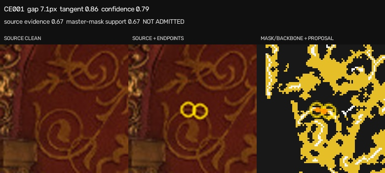

CE001. Смотрите прежде всего на среднюю панель: два жёлтых кружка обозначают окончания. Решите, принадлежит ли промежуток одной непрерывной линии орнамента. Левая панель — чистый источник; правая — только предложение модели.

Решение не выбрано.
Решение относится только к топологической связи. Исходная master-mask автоматически не изменяется.